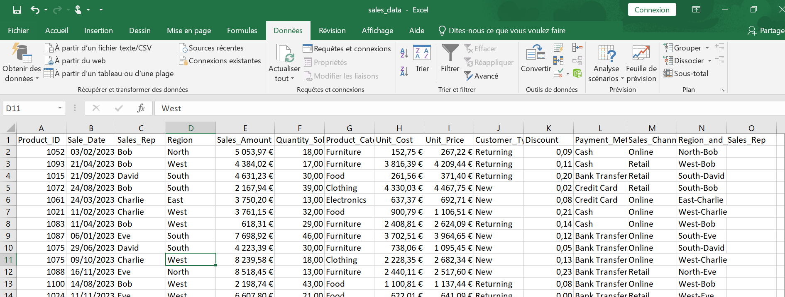
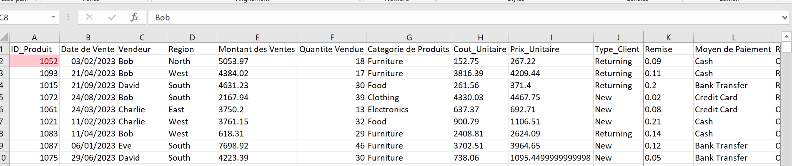
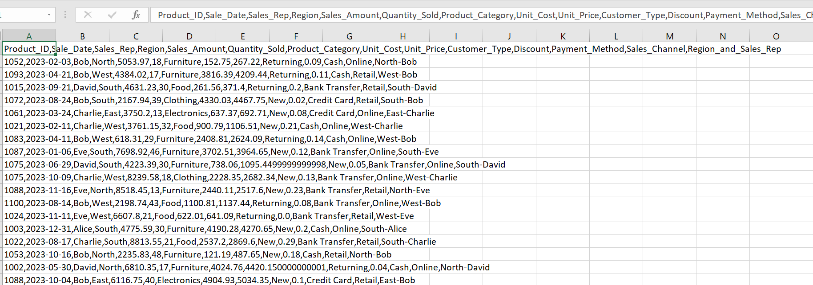
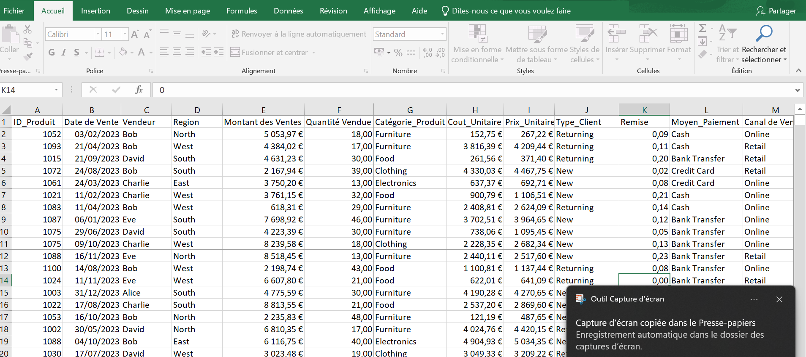
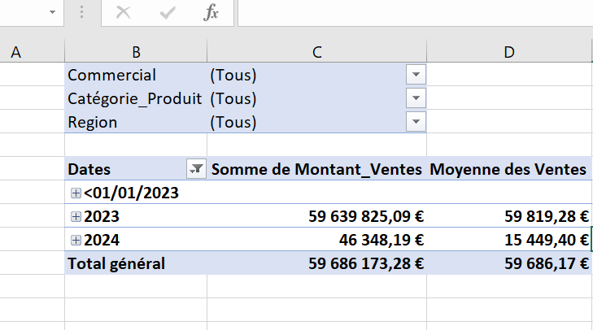
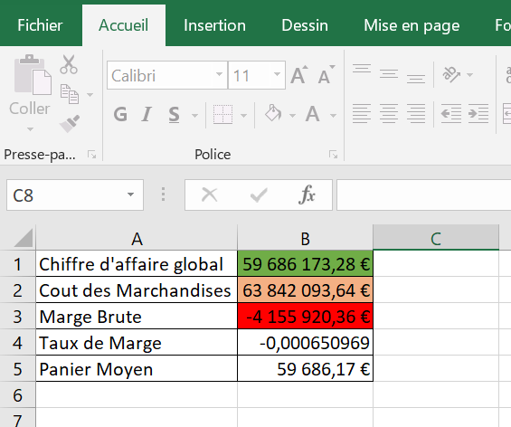
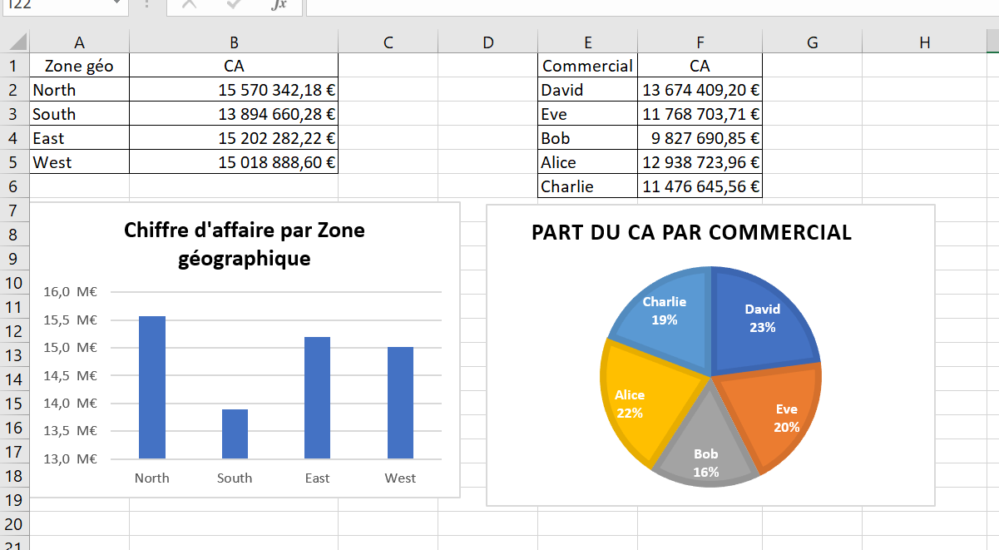

Projet Excel
Analyse de ventes avec Excel
Dans ce projet, j'explique étape par étape comment j'ai préparé les données, construit les analyses et réalisé un tableau de bord de suivi des ventes.
L'objectif : pour ce projet, j'ai utilisé un dataset provenant de Kaggle afin de m'entraîner sur un cas concret d'analyse commerciale.
Mon but était de transformer des données brutes en un tableau de bord simple à lire, capable d'aider à suivre le chiffre d'affaires, les volumes vendus, la rentabilité et les zones géographiques les plus performantes.

Présentation des colonnes : le fichier contient des informations utiles pour comprendre les ventes : les produits, les catégories, les pays ou régions, les quantités vendues, le chiffre d'affaires, les coûts et les bénéfices.
Ces colonnes m'ont permis de construire plusieurs axes d'analyse : performance commerciale, rentabilité, répartition géographique et comparaison des produits.

Formatage du fichier : j'ai commencé par rendre le fichier plus lisible afin d'avoir une meilleure vision des colonnes, des valeurs et des champs à analyser.
Cette étape permet de passer d'un fichier brut à une base plus claire pour la suite de l'analyse.

Renommage et colonnes calculées : j'ai renommé les colonnes pour les rendre plus compréhensibles, puis ajouté des colonnes utiles pour faciliter les calculs et les regroupements.
Cette préparation rend les tableaux croisés dynamiques plus simples à construire et plus faciles à expliquer.

Tableaux croisés dynamiques : j'ai utilisé les TCD pour résumer les ventes et obtenir rapidement des indicateurs utiles.
Les tableaux croisés permettent de comparer les résultats par catégorie, zone ou période sans modifier la base de données source.

Analyse de la rentabilité : cette étape m'a permis de comparer les ventes, les coûts et les marges pour identifier les axes les plus rentables.
L'objectif est de ne pas regarder seulement le volume de ventes, mais aussi la performance réelle générée par l'activité.

Analyse géographique : j'ai ensuite observé la performance commerciale par zone afin de repérer les régions les plus fortes et celles qui nécessitent plus d'attention.
Cette lecture géographique aide à comprendre où se concentrent les opportunités commerciales.

Tableau de bord final : après la préparation et les analyses, j'ai créé un dashboard pour visualiser rapidement les indicateurs principaux du projet.
Le tableau de bord permet d'identifier les tendances, les produits les plus vendus et les informations utiles pour prendre de meilleures décisions commerciales.